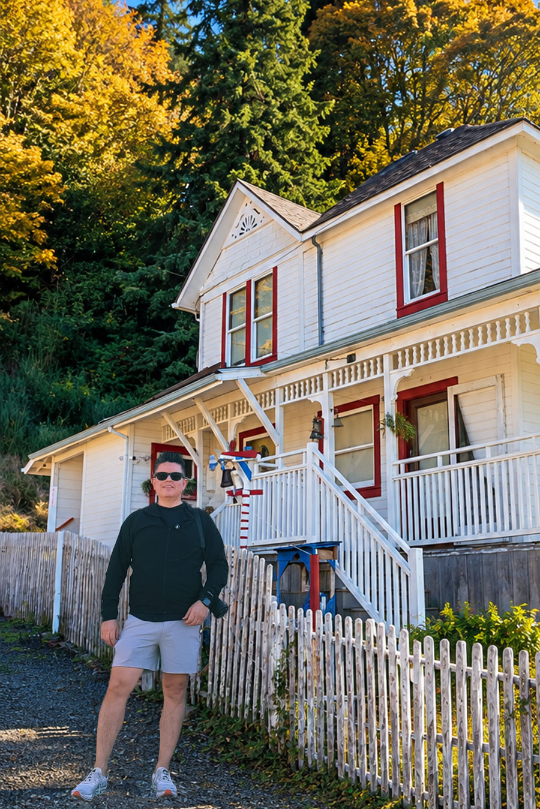

Design with a point of view, and a reason.
I’m Hector Osuna, a product designer in Dallas–Fort Worth, open to relocation. For ten years I’ve designed design systems, multi-device interfaces and brand experiences, combining visual craft with research, analytics and systems thinking.
My practice
10+ years across design systems, responsive and multi-device UI, research and visual craft.
My toolkit
Figma, After Effects, Adobe Creative Suite, HTML/CSS/JS prototyping and AI-assisted exploration.
Next chapter
Designing for the biggest screen in the house, on a team that sweats every detail.
A dream I’ve carried my whole career.
It has always been my dream to work at Apple. Long before I designed for a living, Apple products were where I first noticed that design could feel invisible: the right thing simply happens, and every detail is considered.
That standard has followed me into every project, from testing a logo at one inch to rebuilding a component so it holds up on every screen size. When I set out to learn the living room, I didn’t wait for permission. I designed a tvOS concept to understand the platform, its focus model, its distances and its remote.
A conversation in the south of France.
Before this was a career, it was a trip. I spent time in Montpellier learning the language and trying to live the culture rather than just visit it: long dinners, slower mornings, getting lost on purpose in old stone streets.
I ended up cooking for a local art club, and a conversation with a graphic designer there, about book design of all things, planted the seed. I came home and enrolled at the Art Institute of Dallas.
“It wasn’t just pretty pages; it was systems thinking in service of stories.”
Read the full storyTypography, hierarchy, composition and detail matter. A kerning pair on a poster gets the same attention as the concept.
Complex information should get easier to understand. If a piece needs explaining, it isn’t finished.
Good decisions should become reusable, not rediscovered: templates, components, guidelines that people actually use.
Design should adapt to new formats and audiences without losing its core identity.
Art, food and the odd rabbit hole.
Art history
I can spend an afternoon reading every wall label in a museum. How painters and book designers solved composition and hierarchy centuries ago still shapes how I lay out a page.
Cooking, on camera
The instinct that sent me chasing a conversation about book design also has me filming in my kitchen: part recipe, part improvisation.
Design philosophy
Restrained, high-contrast systems, strong negative space and work where every element earns its place. Thoughtful enough to feel timeless, flexible enough to evolve.